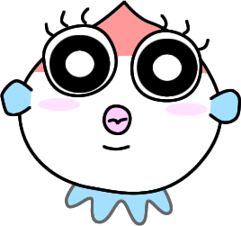
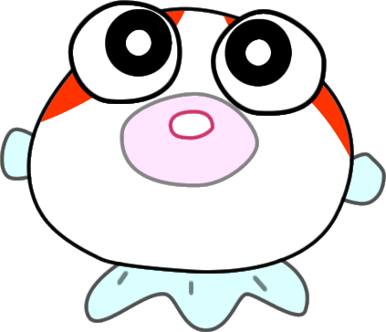
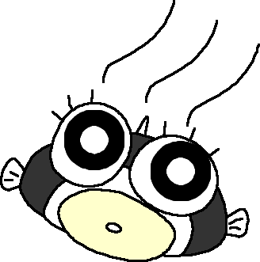

金魚の種類って一言でいってもいろいろみたいなんです。ド素人のこだちは最初はさっぱりわかりませんでした。
ひとつには見た目の大きさでも呼び方があるみたいです。業者さんでないとあまり使わないみたいですけど、和金のちいさな
のを小赤（こあか）と呼んだりするみたいです。
その次に、模様でも呼び方がある！うちのパンダ出目金ちゃんは、お店では「パンダ」って書いて売られていました。
（だから、たぶんパンダ出目金だと思うんですけど、分からないんですよね汗）
それから、純粋に種類、血統的なはなしで分けられているみたいです。
これらは、あくまでもド素人こだちが、今、分かっていることなのですが、かなり奥は深そうです。
とりあえず、うちの金魚たちを好みで並べてみました。
（金魚の種類とタイトルうってるのに、あくまでもお気に入りの金魚しか載せてないのです。汗）


ピンポンパール
とても人気のある金魚です。わりと暖かいとろが産地のようです。 なので、水温は２６～２８℃くらいが好きなようです。 （でも、この温度って雑菌もよく増える温度なんですけどね） 泳ぐのがとても苦手なので、流れのある水槽はできるだけ避け、ろ過装置もぶくぶくにするか、底面ろ過装置にしたほうがいいです。 他の種類の金魚と一緒に飼うことは避けて、ピンポンちゃんはピンポンちゃんだけで飼ってあげましょう。 お店で見るピンポンちゃんは、まるまるとしていますが、うちのピンポンパールはわりとスリムで健康的に見えます。 （その代わり、顔を見ればえさをくれ～ってよってきます。） 飼うのは、わりと難しいとされていますが、そうでもない気がします。

らんちゅう
らんちゅうにもたくさんの種類や産地がありますが、うちのランチュウたちはわりとお手頃なというか上等でないというかごく一般的なランチュウたちです。 それでも、ちょうかわいい。 らんちゅうの大切なポイントは泳ぎ方の優雅さです。 泳ぎははっきりいってへたくそですが、優雅に泳ぐ姿はなんともいえません。 高価ならんちゅうは、小さな２センチくらいの大きさでも3,000～10,000円と高額です。なのに、飼うのはなかなかもって難しいのです。 金魚は進化すれば進化するほど優美になるけれど、泳ぎが下手になり、飼うのも難しくなるのです。 右の絵は、うちの「けいじろう」ですが、もりもり育ってます。 らんちゅうを飼うのでしたら、水質をとても重要視してください。 飼うのは、わりと難しいとされていますが、初心者には難しいということであって、水槽が完成すれば、難易度は中くらいです。

パンダ出目金
ペットショップで見つけたときには、「パンダ」と書いてありました。 ところが、パンダってパンダ模様ですよっていうことなんですよね。 左の絵はうちの「のりまさ」ですが、いったいなんて種類のパンダ金魚なのかわからないままです。 一般的には「パンダ」といえば、パンダ出目金のことを指すような感じでもありますが。。。 もりもり元気です。パンダということで弱いのかなと思ったのですが、わりと平気な顔をしてもりもり成長中です。 どうなんでしょうかね。比較的強いんだな～っていう実感があるのですが、飼うのは難しいのでしょうか？ ちなみにパンダを選ぶときには、黒いところがしっかり黒い子を選んであげるといいみたいですけど。。。 うちの「のりまさ」なんかは、病気で隔離されていた子です。 いちど病気をしているからか、ほんとに病気知らずなんですけどね。
えび
えび関係ないし。 でも飼ってるし。 金魚たちが余りにも水草を食べちゃうので、水草専用の水槽をつくりました。 そのなかにいるえび。 （ほんとうは、金魚が水草を食べないように、しっかりきまった時間にえさを与えて、水草を食べないように癖をつけてやらないといけないのですが、うちの金魚たちは育ち盛りなので。。。）